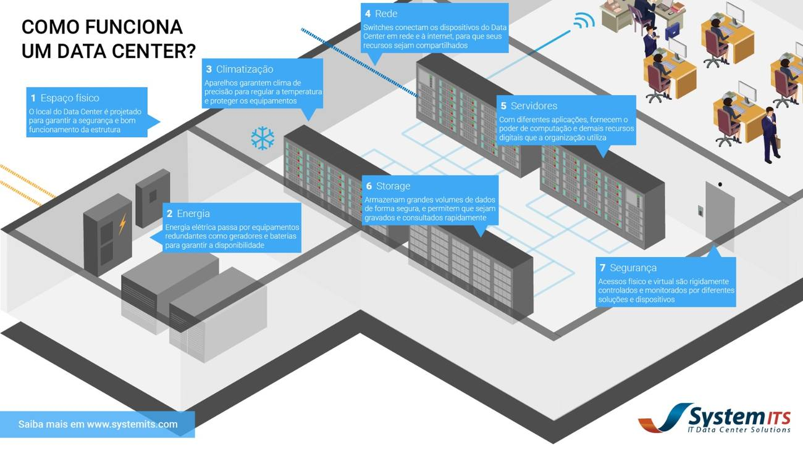
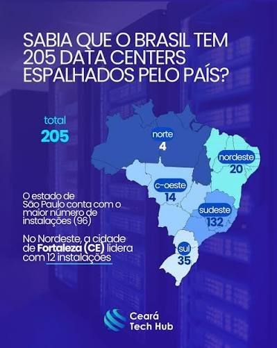
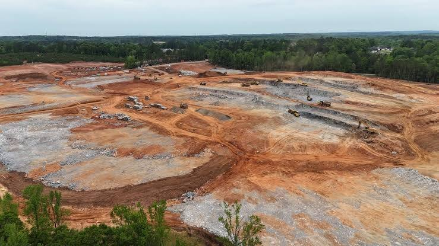
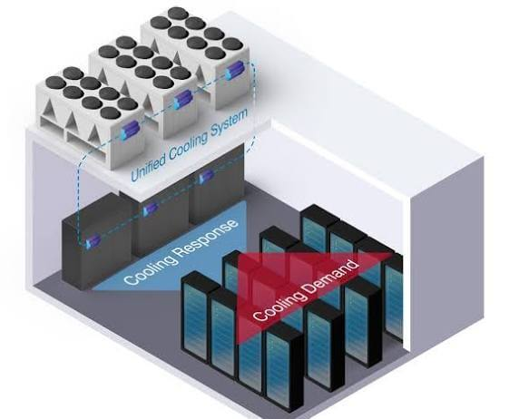
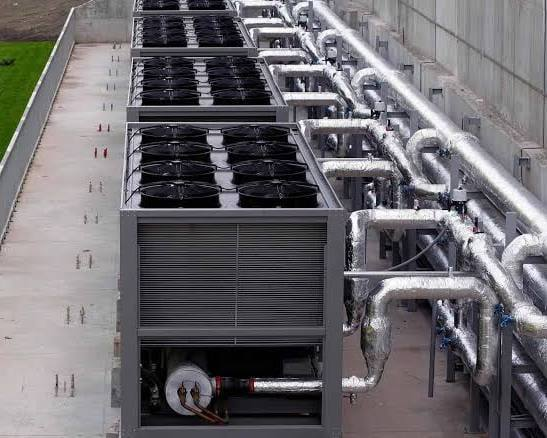
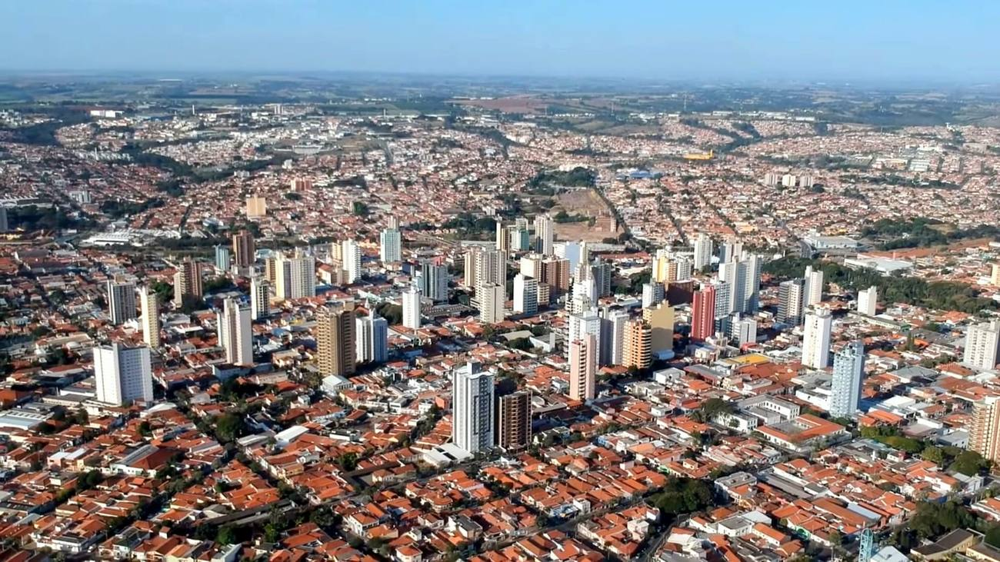
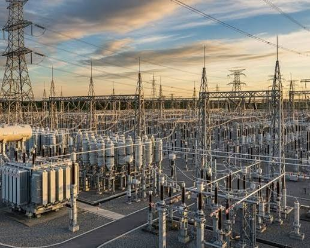
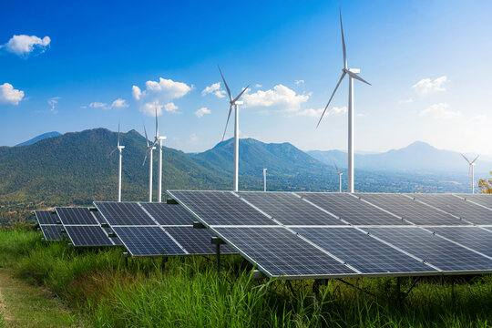

Receber a solicitação
A rede conecta os dispositivos dos usuários aos serviços digitais e aos sistemas que processam suas solicitações.
GUIA DE INVESTIGAÇÃO
A internet parece invisível, mas depende de estruturas físicas, recursos naturais e decisões sobre o uso do espaço geográfico. Explore como essa infraestrutura funciona e quais desafios ambientais ela apresenta.
INFRAESTRUTURA DIGITAL
A internet depende de estruturas físicas distribuídas pelo território: data centers, cabos de fibra óptica, cabos submarinos, antenas, estações de conexão e redes de energia. Essas estruturas permitem armazenar informações, processar solicitações e transmitir dados.
A localização de um data center pode depender de fatores como disponibilidade de eletricidade, qualidade da conexão, condições climáticas, disponibilidade de água, custo do terreno e proximidade de outras infraestruturas.
ENTENDA VISUALMENTE
Quando uma pessoa acessa um site, salva um arquivo na nuvem ou utiliza um serviço on-line, computadores especializados podem processar essa solicitação em um data center. A instalação precisa manter os equipamentos conectados, alimentados por energia e em condições adequadas de funcionamento.

A rede conecta os dispositivos dos usuários aos serviços digitais e aos sistemas que processam suas solicitações.
Os servidores executam aplicações, enquanto os sistemas de armazenamento guardam arquivos e outras informações.
Sistemas elétricos, equipamentos de refrigeração e mecanismos de segurança ajudam a manter a infraestrutura funcionando.
Cada instalação ocupa uma área, utiliza infraestrutura local e depende de recursos disponíveis na região. Por isso, sua construção e operação precisam ser analisadas também sob os aspectos territorial, social e ambiental.
DISTRIBUIÇÃO TERRITORIAL
Os data centers não estão distribuídos de maneira uniforme pelo território. A concentração de instalações em determinadas regiões pode estar relacionada à infraestrutura de telecomunicações, ao mercado consumidor, à oferta de energia e às condições econômicas.

CUSTOS E IMPACTOS
Computadores, celulares e servidores exigem matérias-primas, fabricação, transporte, energia e manutenção. Ao final da vida útil, o descarte inadequado de equipamentos eletrônicos pode contaminar o ambiente e desperdiçar materiais que poderiam ser reaproveitados ou reciclados.
Data centers também precisam de eletricidade contínua e de sistemas que controlem a temperatura. A quantidade de água consumida depende, entre outros fatores, da tecnologia de refrigeração, do clima e das características da instalação.

DADOS E EVIDÊNCIAS
Para compreender os impactos ambientais da infraestrutura digital, é importante utilizar números acompanhados de fonte, período e abrangência geográfica. Os dados abaixo vêm de relatórios técnicos identificados e não devem ser interpretados como valores iguais para todos os data centers.
A Agência Internacional de Energia (IEA) estima que os data centers consumiram aproximadamente 415 terawatts-hora de eletricidade em 2024, cerca de 1,5% do consumo elétrico mundial.
A água pode ser utilizada diretamente em alguns sistemas de refrigeração. Também pode estar associada indiretamente à produção da eletricidade consumida. O volume varia conforme a instalação, a tecnologia e as condições locais.
Fonte: Lawrence Berkeley National Laboratory — relatório de 2024 .
Os servidores liberam calor durante o funcionamento. Sistemas de refrigeração ajudam a manter as temperaturas adequadas, mas suas necessidades de energia e água dependem do projeto.
Material visual: observe os equipamentos de refrigeração e o diagrama abaixo para entender como o controle térmico faz parte da instalação.


COMPARAÇÃO
A computação tradicional e a computação em nuvem são formas diferentes de disponibilizar recursos computacionais. A principal diferença está em onde a infraestrutura é mantida e como os equipamentos são compartilhados.
Uma organização mantém computadores e servidores próprios em suas instalações ou em uma infraestrutura dedicada.
Os recursos são fornecidos por meio da rede e podem ser compartilhados entre vários clientes em data centers operados por provedores.
O compartilhamento e a melhor utilização dos servidores podem reduzir recursos necessários por serviço. Entretanto, o resultado depende da eficiência da instalação, da demanda, da matriz elétrica e de outros fatores ambientais.
Por isso, não é correto afirmar que a nuvem é sempre mais sustentável em qualquer situação: a comparação precisa considerar dados e condições concretas.
A nuvem muda a forma de acessar e compartilhar a infraestrutura, mas não elimina a necessidade de servidores físicos. Para avaliar os dois modelos, é preciso comparar o uso efetivo dos recursos, a energia, a refrigeração, os equipamentos e o serviço oferecido.
Estudo de referência: a dissertação de André Luigi Amaral Di Salvo, defendida na UNIP em 2015, compara duas infraestruturas de data centers e analisa a ecoeficiência da computação em nuvem. Consultar a dissertação no Repositório Digital da UNIP .
TECNOLOGIA PARA CONSERVAÇÃO
Ferramentas digitais também podem apoiar a proteção ambiental. Imagens de satélite, GPS, sensores e sistemas de informação geográfica ajudam a acompanhar mudanças na cobertura vegetal, mapear queimadas, monitorar cursos d'água e identificar áreas vulneráveis.
Essas ferramentas não resolvem os problemas sozinhas: os dados precisam ser interpretados, verificados e utilizados por pessoas e instituições capazes de tomar decisões e agir.

POLÍTICA AMBIENTAL
Empreendimentos e infraestruturas devem ser analisados considerando a legislação aplicável, os possíveis impactos e os direitos das comunidades afetadas. O licenciamento ambiental, a fiscalização e a participação social fazem parte do debate sobre como conciliar atividades econômicas e proteção ambiental.

ALTERNATIVAS
Entre as possibilidades estão escolher locais já alterados em vez de áreas ambientalmente sensíveis, melhorar a eficiência energética, avaliar o uso de água, utilizar energia de menor emissão quando viável, prolongar a vida útil dos equipamentos e ampliar a coleta e a reciclagem de resíduos eletrônicos.
Não existe uma solução única para todos os lugares. A escolha depende das condições ambientais, sociais, econômicas e técnicas de cada região.

BASE DE PESQUISA
O Conexão Terra utiliza pesquisas acadêmicas e publicações técnicas para analisar a relação entre tecnologia, território e meio ambiente. As referências a seguir abordam os impactos dos data centers, o consumo de recursos naturais, a computação em nuvem e as possibilidades de utilizar tecnologias digitais em favor da sustentabilidade.
Renato Guimarães Furtado e Simone Evangelista Cunha analisam os impactos socioambientais e geopolíticos da expansão dos data centers, especialmente no Sul Global. O estudo discute a relação entre inteligência artificial, exploração de recursos naturais e dependência tecnológica.
Relação com o projeto: ajuda a compreender que a expansão da infraestrutura digital não envolve apenas tecnologia. Ela também afeta territórios, recursos naturais e relações econômicas entre países.
FURTADO, Renato Guimarães; CUNHA, Simone Evangelista. Inteligência artificial, data centers e colonialismo digital: impactos socioambientais e geopolíticos a partir do Sul Global. Liinc em Revista, v. 20, n. 2, e7272, 2024. DOI: 10.18617/liinc.v20i2.7272.
Rodrigo de Lacerda Carelli, Carolline Vasconcellos Pereira e Nael Neri de Souza Júnior investigam os efeitos sociais, trabalhistas e ambientais associados à expansão dos data centers no território brasileiro.
Relação com o projeto: contribui para discutir como a instalação dessas estruturas pode afetar o meio ambiente e as comunidades, relacionando a atividade econômica à responsabilidade socioambiental.
CARELLI, Rodrigo de Lacerda; PEREIRA, Carolline Vasconcellos; SOUZA JÚNIOR, Nael Neri de. Data centers: uma abordagem sobre as suas implicações trabalhistas e ambientais no Brasil. Revista Jurídica Trabalho e Desenvolvimento Humano, v. 7, 2024. DOI: 10.33239/rjtdh.v7.253.
Raquel da Silva Bechtold, Haide Maria Hupffer e Daniela Muller de Quevedo discutem a dualidade da inteligência artificial: suas possíveis contribuições para enfrentar desafios climáticos e os impactos ambientais associados aos data centers.
Relação com o projeto: permite analisar os dois lados da tecnologia. A inteligência artificial pode auxiliar no monitoramento ambiental e na eficiência de recursos, mas sua infraestrutura também exige eletricidade, água e matérias-primas.
BECHTOLD, Raquel da Silva; HUPFFER, Haide Maria; QUEVEDO, Daniela Muller de. A dualidade da inteligência artificial: entre soluções sustentáveis ao sistema climático e os impactos ambientais dos data centers. Revista dos Tribunais, v. 1085, mar. 2026. DTR 2026/710.
O artigo de Pontes e Giordano investiga práticas de Tecnologia da Informação Verde em uma empresa educacional, incluindo o gerenciamento de equipamentos e peças descartados.
Relação com o projeto: mostra a importância de gerenciar os resíduos eletrônicos e dar uma destinação adequada aos equipamentos.
PONTES, Floriana Nascimento; GIORDANO, Fabio. Práticas de TI Verde em uma Empresa Educacional para Fomentar a Responsabilidade Socioambiental. Revista de Gestão Ambiental e Sustentabilidade (GeAS), v. 4, n. 2, p. 118–126, 2015. DOI: 10.5585/geas.v4i2.246.
A dissertação de André Luigi Amaral Di Salvo compara infraestruturas de data centers e investiga aspectos energético-ambientais da computação tradicional e da computação em nuvem.
Relação com o projeto: ajuda a entender que a nuvem depende de equipamentos físicos e que a eficiência ambiental deve ser avaliada considerando o funcionamento real de cada infraestrutura.
DI SALVO, André Luigi Amaral. Avaliação energético-ambiental de data centers: computação tradicional versus computação nas nuvens. Dissertação de mestrado, Universidade Paulista (UNIP), 2015.
A publicação atribuída a Santos e Borges aborda inovações relacionadas à sustentabilidade dos data centers e à computação em nuvem verde.
Relação com o projeto: pode complementar a discussão sobre eficiência energética e alternativas para diminuir os impactos ambientais da infraestrutura digital.
SANTOS, R. F. dos; BORGES, P. C. R. Infraestrutura digital sustentável: inovações em data centers e computação em nuvem verde. Revista DCS, v. 23, n. 86, e4216, 2026. DOI informado no registro original: 10.54899/dcs.v23i86.4216.
A expansão dos servidores de inteligência artificial aumenta a demanda por energia elétrica e pode ampliar a pegada hídrica e as emissões de gases de efeito estufa.
Os dados apresentados são estimativas para servidores de IA nos Estados Unidos, publicadas em um estudo científico de 2025. Não representam medições de todos os data centers nem dados específicos do Brasil.
Milhões de metros cúbicos
Terawatts-hora (TWh)
Milhões de toneladas de CO₂ equivalente
Para facilitar a comparação, os resultados foram agrupados em três referências: menor valor estimado, cenário intermediário e maior valor estimado. Os cenários originais do estudo possuem premissas diferentes de expansão e eficiência dos servidores.
Média anual projetada entre 2024 e 2030, em milhões de metros cúbicos
A pegada hídrica considera o uso direto da água e o uso indireto associado à geração de eletricidade.
Média anual projetada entre 2024 e 2030, em terawatts-hora (TWh)
O consumo energético depende da quantidade de servidores, da demanda por processamento e da eficiência dos equipamentos.
Média anual projetada entre 2024 e 2030, em milhões de toneladas de CO₂ equivalente
As emissões variam conforme a expansão dos servidores e as condições de geração de eletricidade.
Os cenários indicam que uma expansão maior dos servidores de IA pode estar associada ao aumento da demanda de energia, da pegada hídrica e das emissões de carbono. Por isso, é importante investir em equipamentos eficientes e em fontes de eletricidade de baixa emissão.
XIAO, T. et al. Environmental impact and net-zero pathways for sustainable artificial intelligence servers in the USA. Nature Sustainability, v. 8, p. 1541–1553, 2025.
DOI: 10.1038/s41893-025-01681-y
Os valores são projeções de pesquisa para servidores de IA nos Estados Unidos no período de 2024 a 2030, e não valores medidos exclusivamente em 2030.
Consultar o artigo científico →